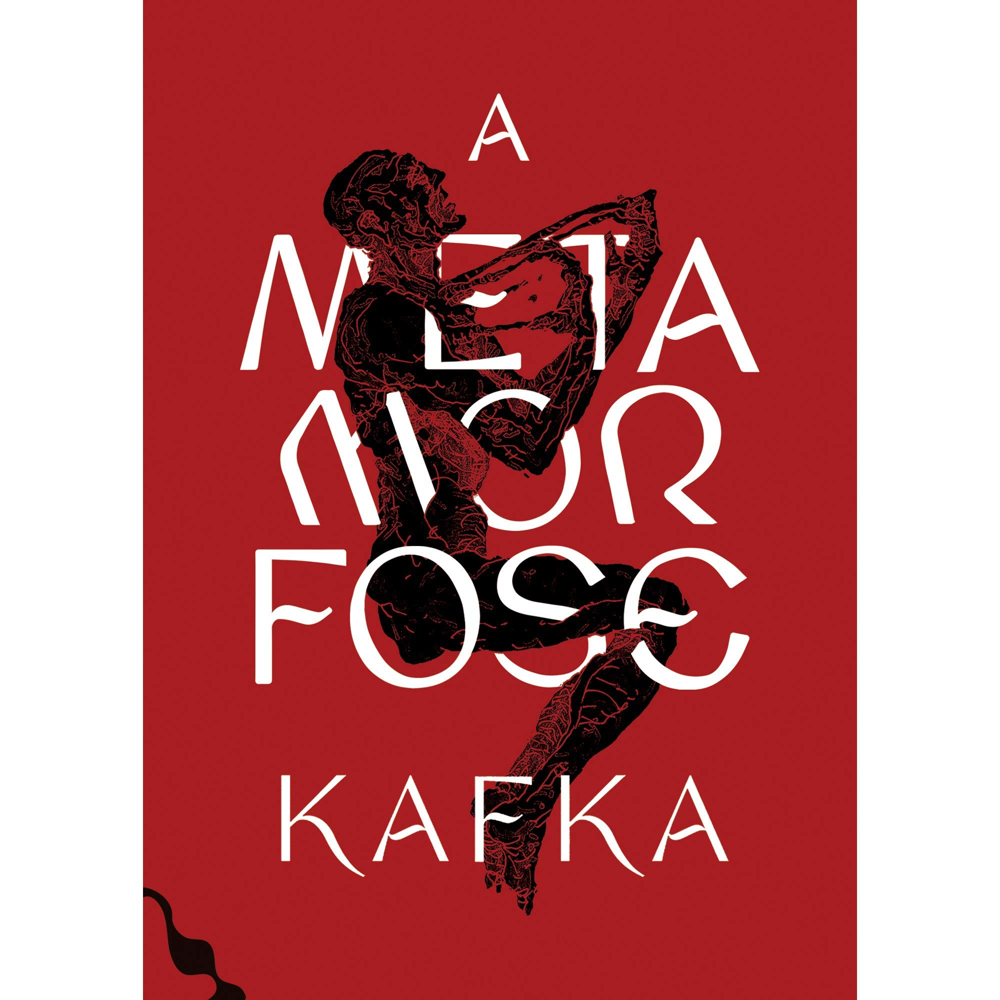
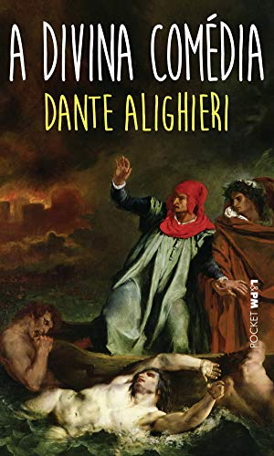

A metamorfose de Franz Kafka
A Metamorfose é uma novela escrita por Franz Kafka, publicada pela primeira vez em 1915.

A divina comédia de Danta Alighieri
SA Divina Comédia é um poema de viés épico e teológico da literatura italiana e mundial, escrito por Dante Alighieri no século XIV e dividido em três partes: o Inferno, o Purgatório e o Paraíso.

Dom Casmurro de Machado de Assis
"Dom Casmurro" conta a história de Bento Santiago (Bentinho), apelidado de Dom Casmurro por ser calado e introvertido. Na adolescência, apaixona-se por Capítu, abandonando o seminário e, com ele, os desígnios traçados por sua mãe, Dona Glória, para que se tornasse padre